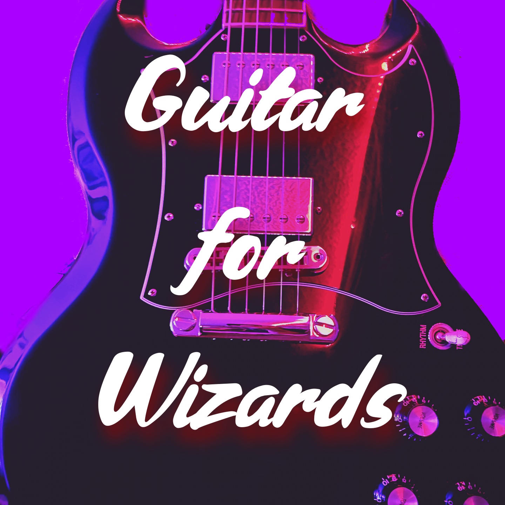
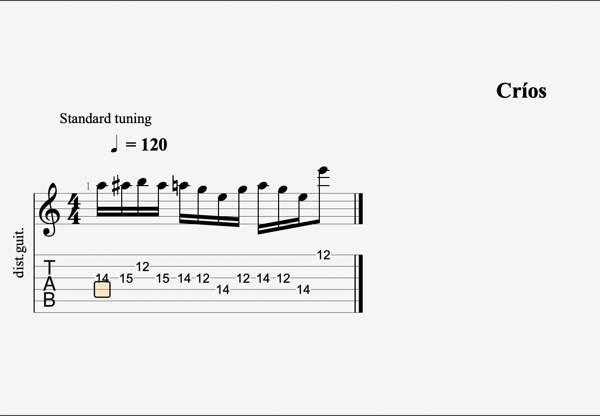

How to Play Guitar for Wizards!

One
-INTERMIDIATE Skill Level-
It's got six strings, comes in two main types. Acoustic: which means it has a sound hole under those strings or Electric: which has pickups below it. We know this!.
If you are here reading this means you have one or the other and this will easily apply to both.
Personally I play the Electric guitar more then anything! I own oneSG Standard in Black. L00K$ Sick. I know, I know what you are thinking HE'S LYING theres no way a Wizard would only have one guitar?! You are not wrong I have one of each, one electric and one acoustic. I have owned all different types of guitars and I have settled with just one of each. The SG does everything I need it to do (for now). That being said
here is something that I like to play on my guitar.
Lick 0ne

Please excuse the yellow square. This was made with Guitar Pro. This is a fun little lick that I tend to do mindlessly when I am warming up. Some people wil critisise it and find it too simple. It is! It is a simple fun bluesy lick that just rolls off the tip of my fingers. The structure falls out of a Blues pentatonic shape in E. I typically run it from this position on the 12th fret or from the 7th fret in A.
Críos